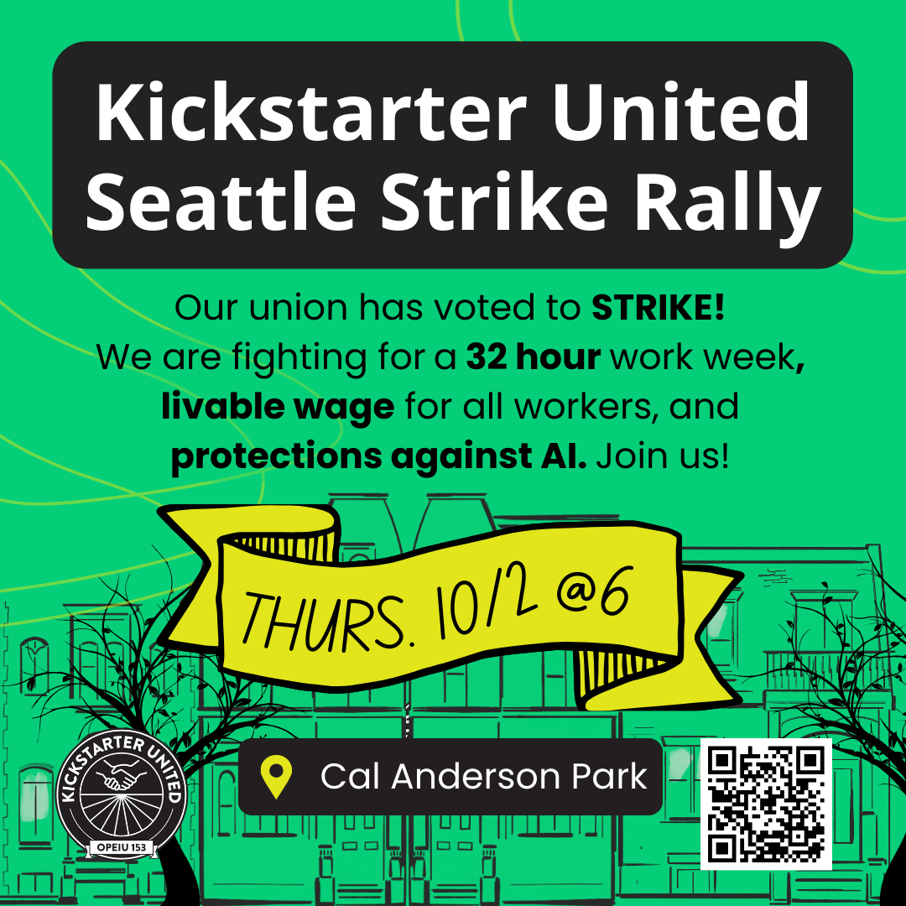

A Resounding YES to Strike
On September 26, 2025, 85% of Kickstarter United (OPEIU Local 153) members voted to authorize a strike beginning Thursday, October 2 at 8 a.m. unless management reaches a fair contract agreement.
Our demands are simple:
- Protect the 32-hour, 4-day workweek that’s been in place for over three years.
- Establish a minimum salary that provides a livable wage for all workers.
Read the full press release from OPEIU here: Kickstarter United-OPEIU 153 Workers Authorize Strike Demanding Four-Day Workweek and Minimum Salary
We are not asking people to boycott kickstarter.com or withhold support from creators.
If you want to support us, here's what you can do!
Rally With Us
Our strike rallies are a chance to come together in solidarity. Join us in Seattle and New York as workers, friends, and community members gather to support a fair contract. Together, we'll raise our voices for a 32-hour week and livable wages.

{kind=link}
{kind=link}
Our Next Contract
In July of 2025 we began bargaining with the management at Kickstarter for our second union contract (our first contract was won in 2022). From the outset we have been clear with management that our top priorities are codifying the 4-day, 32-hour work week (4DWW) as the standard and raising the minimum salary for all members of the bargaining unit. While we are proud of the progress we have made in some areas, management continues to block real progress on the 4DWW and fair minimum salaries.
For more information, see our FAQ
What You Can Do
With management refusing to move on the 4-day week and fair pay, we need you to stand with us more than ever. Here’s how you can take action today:
Donate to Our Solidarity Fund
On Labor Day we launched our Solidarity fund on GoFundMe. If management forces a strike, this GoFundMe will help our most vulnerable workers weather the hardship of pay-stoppage.
If we reach an agreement without striking, we will refund any donation on request and roll the remaining funds into a sympathetic solidarity and/or hardship fund to help our fellow workers
Tell Kickstarter Management: Meet Workers' Demands
We're fighting for a fair contract that protects our 4-day, 32-hour work week and raises pay for the lowest-paid employees. Unless management acts, we are prepared to strike on October 2. Read our full petition text and sign now to help us avoid a strike!
Read our Appeal to the Board
At the bargaining table, Kickstarter management keeps passing the buck, claiming they can’t codify the 4-day work week because “they don’t own the company.” So we went straight to the board.
Many board members have built careers around innovative, socially driven business models and Kickstarter was chartered as a PBC to meaningfully commit to those values. We felt the board should know management’s actions at the table don’t align with that ethos.
Their response? A brief dismissal of our concerns and a rejection of our invitation to the table.
We implore the board to do the right thing and marry their actions to their words by supporting our cause.
Read the full letter below
Watch Our Solidarity Rally
On September 5th, we held a public virtual rally to support our fight for a fair contract.
We featured unionized tech workers who’ve gone on strike, elected representatives who support a 32-hour week, and Kickstarter United members discussing our our demands and our union.
Featured speakers and supporters
- The New York Times Tech Guild: John Cruickshank and Kait Hoehne, leaders in last year’s groundbreaking strike.
- Alphabet Workers Union: Parul Koul, president, sharing organizing lessons from big tech.
- New York State Assembly: Emily Gallagher and Phara Souffrant Forrest, sponsors of 32-hour week legislation.
- Seattle: Kshama Sawant, former City Council member and current candidate for the United States Congress, advocating a 30-hour week and a $25 per hour minimum wage.